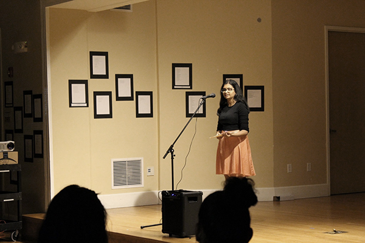

“Rural Asian American Wests: Racial Distance, Cross-Racial Encounter, and Settler Solidarity in the Fiction of Hisaye Yamamoto, Jung Yun, and Linda Sue Park,” Western American Literature, vol. 59, no. 2, Summer 2024.
“Towards a Rural Ethnic Studies, via Ruth L. Ozeki’s My Year of Meats,” ISLE: Interdisciplinary Studies in Literature and Environment, 13 June 2023 (Advance article).
"10 Novels to Understand Rural America" Michigan Quarterly Review, July 2024.
"Hydronarratives: Water, Environmental Justice, and Just Transition by Matthew S. Henry (review)" Western American Literature, vol. 59, no. 1, Spring 2024.
"Introduction: Personal and Pedagogical Perspectives." Western American Literature, vol. 57, no. 2, Summer 2022. With Jillian Moore.
"Graduate Student Workers on the Rise." Academe, 4 May 2021. With Jeremy Glover.
"Response to 'The urban-rural divide: Stanford's most pernicious bubble?'" The Stanford Daily, 22 January 2019.
"The End of White Innocence: On Eula Biss' 'Notes From No Man's Land.'" Cleveland Review of Books, 6 November 2018.
"Writing Home." The Margins, 11 June 2019.
"Pregnancy Dreams #1 (Redwoods)." The Indianapolis Review, 20 July 2018.
"Sri Venkateswara Swami Temple, Aurora, Illinois." The Indianapolis Review, 20 July 2018.
"Always the possibility.," "no space," "poisoning a goddess," "The Heads Claudia & Hermann." jmww, 23 February 2018.
"The outline, the silhouette, the suggestion." The Wanderer, 4 January 2018.
"incorrigible disturbers of the peace," "Apogee." Yes Poetry, 1 May 2017.
"Welcoming Surabhi Balachander." Oregon State University School of Writing, Literature, and Film, Summer 2024.
"We asked book lovers to reflect on AAPI Heritage Month. Here’s what they recommended." 19th News, 8 May 2023.
"A Sense of Place" Rackham Graduate School, 23 Nov 2020.